SIGEP (Système Horon) est une plateforme burkinabè, déjà construite et opérationnelle, qui permet de faire exécuter certaines peines et mesures judiciaires hors des murs de la prison, grâce à un bracelet électronique porté à la cheville. La personne reste chez elle, garde son travail et sa famille ; la Justice, elle, sait à chaque minute où elle se trouve, mesure ce qu'elle accomplit, et est alertée immédiatement au moindre écart.
Ce dossier va volontairement dans le détail. Il décrit le matériel réellement utilisé, chaque type de mesure que le juge peut prononcer, le fonctionnement complet du programme de Travail d'Intérêt Général — de l'enregistrement du condamné sur un site agréé jusqu'à la remise automatique du relevé d'heures au juge —, le cycle de vie d'un dossier, cinq scénarios concrets de bout en bout, et le modèle économique par lequel les contributions des porteurs solvables financent le dispositif et allègent durablement le budget de l'État.
Comme la plupart des pays de la sous-région, le Burkina Faso fait face à une équation pénitentiaire difficile :
Le dispositif repose sur trois équipements physiques : le traceur de cheville HORON X, la base de recharge à batterie intégrée et le Beacon d'assignation à domicile. Ils sont présentés ci-après avec leurs caractéristiques réelles.
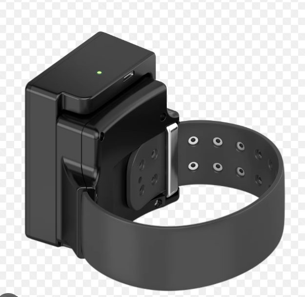
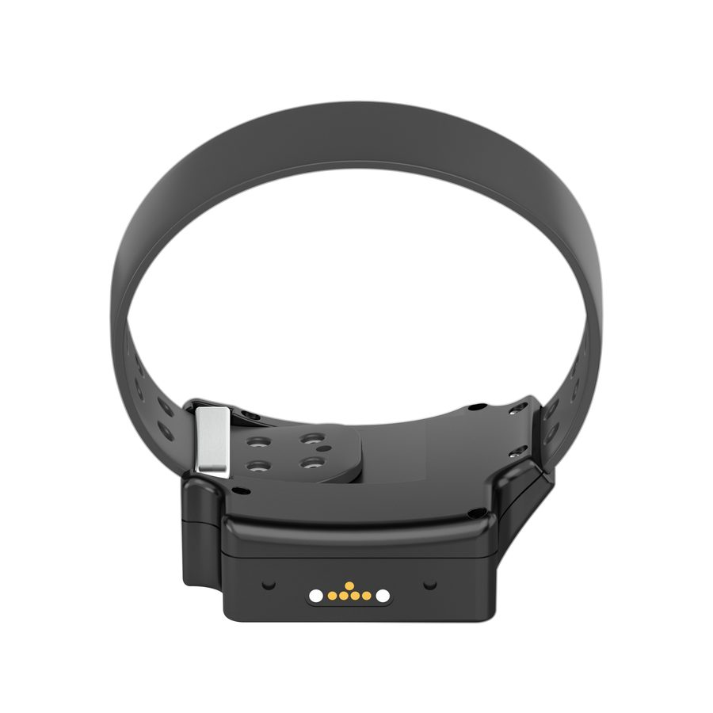
Le porteur ne doit pas avoir à « faire attention » à son bracelet : il doit pouvoir travailler, se laver, être surpris par la pluie, marcher dans la poussière ou dans la boue. C'est une condition de l'acceptabilité de la mesure autant qu'une condition de fiabilité de la preuve.
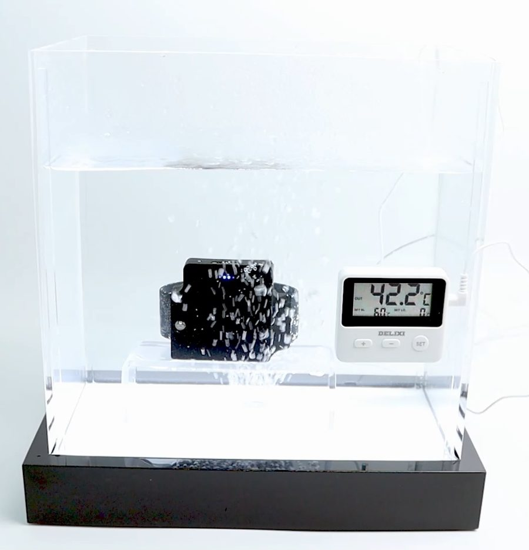
C'est un point souvent négligé et pourtant capital pour l'acceptation sociale de la mesure : le bracelet n'est pas seulement un outil de contrôle sur la personne, c'est aussi un outil de protection pour elle. Un porteur agressé, victime d'un malaise ou menacé peut appuyer trois secondes sur le bouton SOS : le centre reçoit l'alerte avec la position exacte et peut parler directement à la personne.
Le GPS dit où l'on est à l'extérieur. Il est moins précis à l'intérieur d'un bâtiment. Or l'assignation à résidence et le couvre-feu se jouent précisément à l'intérieur. Le Beacon résout ce problème : posé au domicile et alimenté par une simple prise, il dialogue en Bluetooth avec le bracelet. Tant que le bracelet « voit » le Beacon, la Justice sait de façon fiable que la personne est chez elle. Dès qu'il ne le voit plus pendant la plage protégée, l'alerte part.
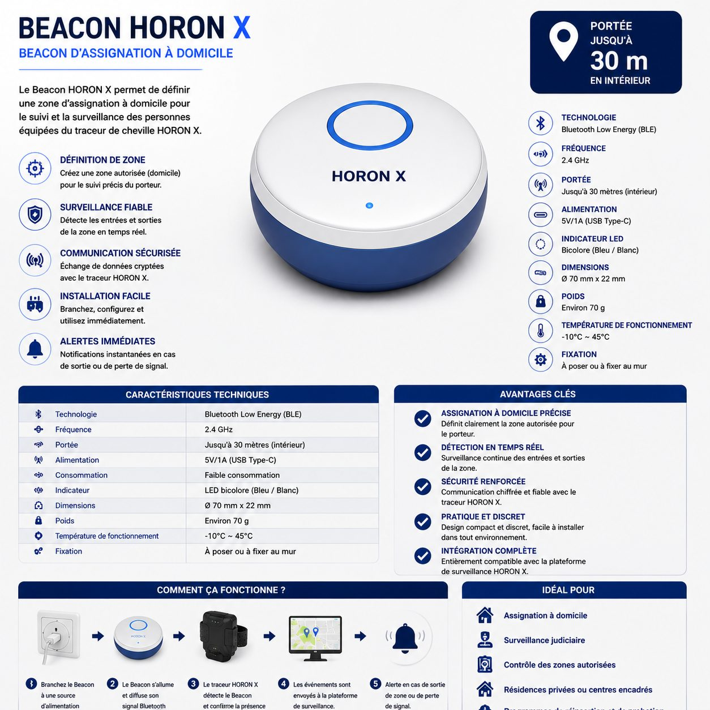
| Caractéristique | Traceur de cheville HORON X | Base de recharge | Beacon domicile |
|---|---|---|---|
| Fonction | Localisation, détection de sabotage, alerte, communication vocale | Recharge sans retrait du bracelet + réserve d'énergie | Définition et contrôle de la zone « domicile » |
| Batterie | 4 000 mAh — autonomie 5 à 10 jours | 6 000 mAh — 2 à 3 recharges complètes | Alimentation secteur 5 V / 1 A (USB-C) |
| Liaisons | GPS haute sensibilité · 3G/4G · Bluetooth BLE 4.2 · nano SIM | Contacts à broches magnétiques · entrée/sortie 5 V / 2 A USB-C | Bluetooth Low Energy 2,4 GHz — portée jusqu'à 30 m en intérieur |
| Résistance | IP68 — étanche (immersion 1,5 m), anti-poussière, anti-choc | Boîtier ABS ignifuge · protections surcharge, surchauffe, court-circuit | Usage intérieur · −10 °C à +45 °C |
| Sécurité | Bracelet TPU + bande d'acier intégrée anti-coupe · verrouillage anti-démontage · détection d'ouverture | Charge contrôlée | Communication chiffrée avec le traceur |
| Interface | Bouton SOS · haut-parleur · microphone · LED d'état (réseau, GPS, batterie) | 4 LEDs de niveau (25 / 50 / 75 / 100 %) | LED bicolore bleu / blanc |
| Format | Porté à la cheville, sous le vêtement | 83 × 61 × 22 mm — env. 130 g | Ø 70 mm × 22 mm — env. 70 g |
SIGEP ne réinvente pas le droit : il donne à chaque mesure existante un moyen de contrôle. Le magistrat choisit un type de mesure, puis en règle les paramètres. Le système traduit ces paramètres en règles qu'il applique automatiquement, minute après minute.
| Type de mesure | Ce que le juge paramètre | Ce que le système contrôle en continu |
|---|---|---|
| Assignation à domicile | Adresse du domicile, plage de présence obligatoire, durée | Présence effective au domicile via le Beacon ; alerte à toute sortie non autorisée |
| Détention à domicile | Domicile, régime permanent ou plages de sortie autorisées (travail, soins) | Présence permanente, tolérances horaires, toute sortie hors fenêtre autorisée |
| Travail d'Intérêt Général | Nombre d'heures ordonnées, site d'accueil agréé, périmètre du site | Présence sur le site, cumul automatique des heures effectuées, avancement en % (voir §6) |
| Couvre-feu | Jours de la semaine concernés (du lundi au dimanche, à la carte) et plage horaire début–fin | Présence au domicile pendant la plage, jour par jour ; alerte de violation de couvre-feu |
| Interdiction de zone | Un ou plusieurs périmètres interdits (domicile de la victime, quartier, établissement) | Toute entrée dans un périmètre interdit — l'alerte part avant le contact, pas après le drame |
| Liberté surveillée | Périmètre de vie autorisé, obligations de présentation, visites | Maintien dans le périmètre, respect de l'agenda des obligations |
Le magistrat n'a pas à savoir dessiner une carte. Il exprime son intention en langage courant — « il doit rester dans l'arrondissement de Baskuy », « interdiction d'approcher le domicile de la plaignante ». Le système enregistre cette demande de périmètre, l'administration en réalise le tracé technique, et le périmètre ne devient actif qu'une fois validé. Le juge garde la décision, l'administration exécute le tracé, la trace de qui a fait quoi est conservée.
Chaque périmètre possède ses propres caractéristiques :
| Paramètre | Options disponibles |
|---|---|
| Nature | Zone autorisée (le porteur doit y rester) ou zone interdite (le porteur ne doit pas y entrer) |
| Forme | Polygone dessiné librement sur la carte, ou cercle défini par un centre et un rayon en mètres |
| Technologie | Zone GPS (extérieur, grande échelle) ou périmètre domicile Bluetooth (intérieur, quelques dizaines de mètres) |
| Horaires d'activation | Permanente, ou active seulement entre deux heures — par exemple une zone TIG active de 07 h 00 à 17 h 00 et un périmètre domicile actif de 20 h 00 à 06 h 00 |
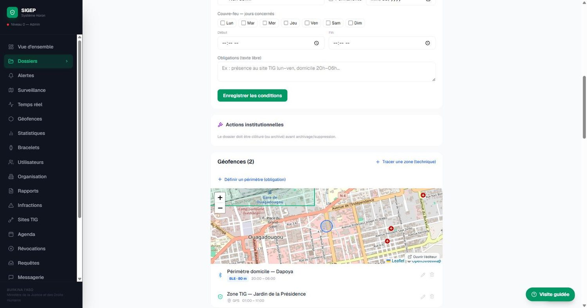
Aucune politique de surveillance électronique ne survit à un fait divers causé par un placement mal ciblé. La sélection des profils est donc la première garantie du dispositif. Nous proposons ci-après une grille de travail, qu'il appartient au Gouvernement et au législateur d'arrêter définitivement.
| Profil | Justification |
|---|---|
| Courtes peines sans violence (vol simple, infractions économiques, délits routiers hors homicide, infractions à la police des étrangers) | La détention y coûte cher, désinsère et ne protège personne. C'est le gisement principal de désengorgement. |
| Condamnés à un travail d'intérêt général | La mesure existe en droit mais reste inappliquée faute de contrôle. Le dispositif la rend enfin exécutable et prouvable. |
| Détention provisoire évitable (prévenus non dangereux présentant des garanties de représentation) | Alternative directe à une détention qui n'est ni une peine ni une condamnation, et qui pèse lourdement sur les effectifs carcéraux. |
| Fins de peine et libérations conditionnelles | Sas de réinsertion contrôlé : la sortie n'est plus brutale, elle est accompagnée et surveillée. |
| Personnes vulnérables (état de santé incompatible avec la détention, femmes enceintes ou allaitantes, personnes âgées, mineurs selon le régime applicable) | Réponse humanitaire et conforme aux standards internationaux, sans renoncer au contrôle. |
| Port volontaire à la demande du prévenu ou du condamné | Matérialise la bonne foi, évite la détention provisoire, et constitue une recette pour le dispositif (§17). |
Une exception à réserver : l'interdiction d'approcher une victime peut, elle, être utile même pour des profils plus lourds, en complément d'une autre mesure — la zone d'exclusion protège la victime sans se substituer à la sanction principale.
C'est le module que ce dossier détaille le plus, car c'est celui qui change le plus profondément la pratique judiciaire. Aujourd'hui, un juge qui prononce 120 heures de travail d'intérêt général n'a aucun moyen fiable de savoir si elles ont été faites. Avec SIGEP, chaque heure est enregistrée, signée, cumulée automatiquement, et le juge est averti dès que la peine est accomplie.
Avant tout placement, l'État constitue son répertoire des structures habilitées à accueillir des personnes en TIG. Chaque site est enregistré dans le système avec sa fiche complète :
| Information enregistrée | Utilité opérationnelle |
|---|---|
| Nom de la structure | Identification dans les décisions et les rapports |
| Catégorie : mairie/administration, hôpital et santé, école et éducation, ONG et associatif, espace vert, autre | Permet d'orienter le condamné vers un travail adapté à son profil, et de piloter la politique d'insertion par secteur |
| Adresse et arrondissement | Affectation de proximité : on n'envoie pas un condamné de Bogodogo travailler à l'autre bout de la ville |
| Responsable et téléphone | Interlocuteur identifié, joignable, qui répond de la présence effective |
| Capacité d'accueil (de 1 à 500 places) | Empêche la saturation d'un site : le système refuse une affectation au-delà de la capacité |
| Occupation actuelle | Visible en permanence : le juge voit les places libres avant de décider |
| Horaires d'ouverture | Base du contrôle de présence et de la planification des séances |
| Coordonnées GPS | Permet de créer en un clic le périmètre de surveillance du site |
| Statut actif / suspendu | Un site peut être suspendu (travaux, manquement) sans perdre son historique |
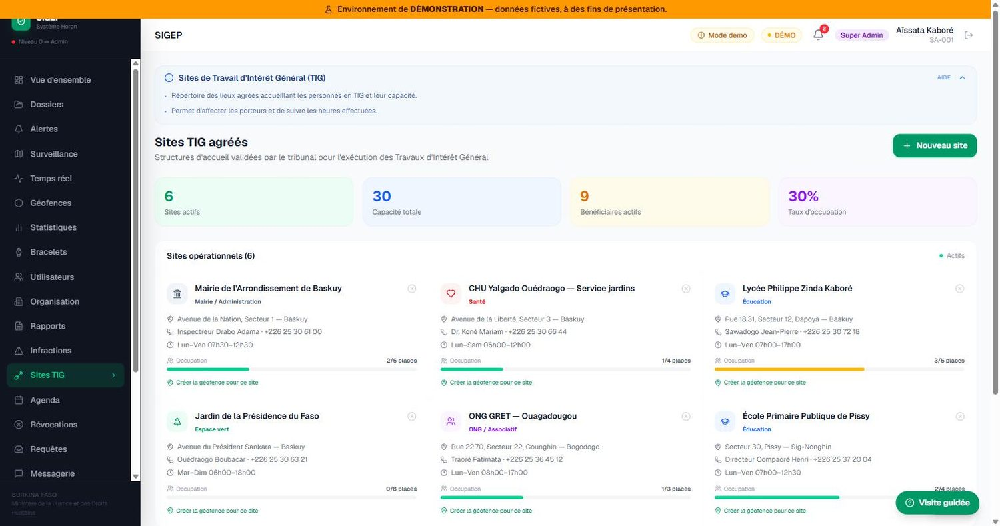
Une fois la mesure prononcée, l'affectation du condamné à un site précis est un acte contrôlé. Le système refuse l'affectation dans quatre cas, et l'explique à l'agent :
Le juge fixe ensuite le nombre d'heures ordonnées (de 1 à 9 999), qui devient l'objectif à atteindre. Ces deux actes — affectation et fixation des heures — sont inscrits au journal d'audit avec le nom de leur auteur et l'heure exacte.
À chaque séance de travail, l'agent habilité ou le superviseur du site enregistre un pointage. C'est l'acte élémentaire du dispositif, et il est volontairement simple : trois champs.
Le pointage est signé : l'identité de l'agent qui l'enregistre est attachée définitivement à l'enregistrement. Une règle simple ferme la porte à la fraude la plus évidente : un seul pointage par dossier et par date. On ne peut pas déclarer deux fois la même journée.
C'est ici que SIGEP se distingue d'un simple registre papier. À chaque pointage enregistré ou supprimé, le système ne se contente pas d'ajouter ou de retrancher : il recalcule intégralement le total à partir de l'ensemble des séances réellement enregistrées, puis inscrit ce total sur le dossier.
Le dossier affiche en permanence :
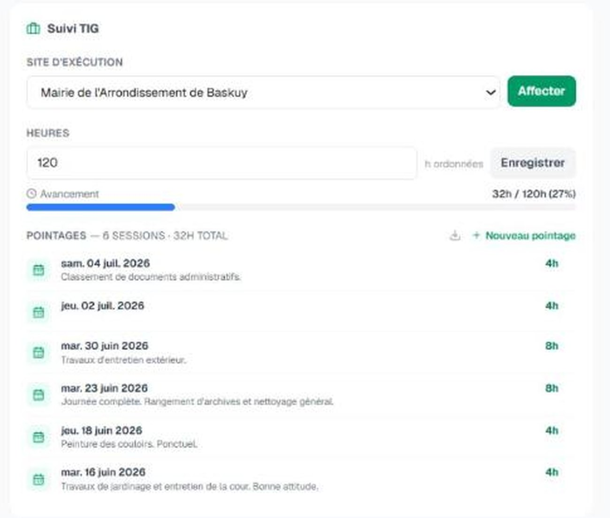
Au moment précis où le total des heures effectuées atteint le nombre d'heures ordonnées, le système notifie automatiquement le magistrat responsable du dossier : « TIG accompli — les heures sont complètes, action requise ». Le dossier affiche simultanément la mention « TIG accompli — informez le juge pour clôturer le dossier ».
Deux précisions qui font la solidité juridique du dispositif :
| Risque | Verrou appliqué par le système |
|---|---|
| Déclarer des journées qui n'ont pas eu lieu | Un seul pointage par dossier et par date ; aucune date future ; aucune date antérieure au début de la mesure |
| Gonfler artificiellement une journée | Maximum 24 heures par séance ; toute valeur incohérente est rejetée |
| Effacer une mauvaise journée après coup | Un agent de terrain ne peut supprimer que ses propres pointages, et uniquement ceux du jour même. Au-delà, seul un magistrat ou la super-administration peut intervenir |
| Faire disparaître les traces | Chaque création, modification et suppression est inscrite au journal d'audit avec l'auteur, la date et le contenu — journal en lecture seule |
| Supprimer un site pour effacer son passé | Un site ne peut être supprimé s'il reste des dossiers actifs ou si des pointages historiques le référencent. La mémoire du dispositif est protégée |
| Désactiver un site en laissant des condamnés dans le vide | La désactivation est refusée tant que des bénéficiaires y sont affectés ; ils doivent être réaffectés d'abord |
| Surcharger un site complaisant | Contrôle de capacité à chaque affectation ; taux d'occupation visible de tous |
Le pointage déclare les heures ; le bracelet, lui, atteste la présence. Les deux se recoupent :
Un superviseur qui signerait des heures pour une personne absente laisserait donc une contradiction visible entre son pointage et les positions enregistrées — contradiction qui apparaît dans le rapport de dossier individuel.
Deux sorties sont disponibles à tout moment :
Les sections précédentes décrivent des mécanismes. Celle-ci les met en situation. Les noms et références sont fictifs ; les enchaînements sont exactement ceux que le système produit.
M. O., 34 ans, mécanicien, père de trois enfants, est condamné pour vol simple à 120 heures de travail d'intérêt général. Sans SIGEP, il aurait fait six mois de prison faute d'outil de contrôle — et perdu son atelier.
| Moment | Ce qui se passe dans le système |
|---|---|
| Jour 1 — Audience | Le juge crée le dossier, choisit la mesure « Travail d'Intérêt Général », saisit 120 heures ordonnées et affecte le condamné à la Mairie de l'Arrondissement de Baskuy. Le système vérifie que le site est actif et qu'il reste des places : 2 occupées sur 6. Affectation acceptée et journalisée. |
| Jour 2 — Pose | Le bracelet est posé, le Beacon installé au domicile. Un périmètre GPS est créé autour de la mairie, actif de 07 h 30 à 12 h 30, horaires d'ouverture du site. Un périmètre domicile est activé de 20 h à 06 h. |
| Jours 3 à 60 | À chaque séance, le responsable du site enregistre le pointage : date, heures, notes. « 4 h — entretien des espaces communs, ponctuel et appliqué ». Le total se recalcule à chaque fois : 4 h, 8 h, 12 h… La barre d'avancement passe du bleu à l'orange. |
| Jour 44 | M. O. est absent sans justification. Aucun pointage n'est saisi ce jour-là. L'obligation figure à l'agenda comme manquée ; la journée n'est pas comptée. Le juge le voit dans le rapport mensuel de conformité. |
| Jour 61 — 15 h 20 | Le pointage de l'après-midi porte le total à 120 h / 120 h. Au moment exact du franchissement, le juge reçoit la notification : « TIG accompli — les heures sont complètes. Action requise. » |
| Jour 63 — Audience | Le juge édite le rapport de dossier individuel : 31 séances datées, 120 heures, notes du superviseur, zéro sortie de périmètre, une absence justifiée. Il prononce la clôture. Le bracelet est retiré, contrôlé, remis en stock. |
M. S. est assigné à résidence dans l'attente de son procès, avec obligation de présence de 20 h à 06 h.
| Moment | Ce qui se passe dans le système |
|---|---|
| 23 h 14 | Le bracelet cesse de « voir » le Beacon du domicile. Le système crée une alerte de sortie de zone, de gravité élevée : sirène sur les postes de garde, notification, SMS selon les préférences. La carte se centre automatiquement sur la position. |
| 23 h 15 | Un opérateur prend l'alerte. Tous les autres postes voient immédiatement qu'elle est prise en charge : pas de double intervention, pas d'alerte oubliée. |
| 23 h 16 à 23 h 40 | M. S. reste dehors. Le système ne crée pas de nouvelle alerte : c'est le même incident. Il ne noie pas les opérateurs sous les répétitions. |
| 23 h 41 | Une patrouille est envoyée. L'agent pointe son intervention sur le terrain ; sa propre position GPS est enregistrée avec le pointage — preuve que l'intervention a eu lieu. |
| 00 h 05 | M. S. est de retour à son domicile. L'incident est marqué comme terminé, mais l'alerte reste ouverte : sa clôture est un acte humain motivé, jamais un effacement automatique. |
| 00 h 12 | L'opérateur clôture avec le motif : « Intervention — retour au domicile constaté par patrouille ». Motif, auteur et heure sont inscrits définitivement. |
| Le lendemain | L'incident figure au dossier. Si M. S. ressort une autre nuit, ce sera un nouvel incident, distinct. Les incidents s'accumulent et alimentent, le cas échéant, une demande de révocation motivée par un nombre précis de violations. |
Dans une affaire de violences conjugales, le juge interdit à M. K. d'approcher le domicile de la plaignante.
| Moment | Ce qui se passe dans le système |
|---|---|
| À la décision | Le juge formule : « interdiction d'approcher le domicile de la plaignante ». L'administration trace un périmètre d'exclusion circulaire autour de l'adresse protégée, avec un rayon fixé par le magistrat. Le périmètre est permanent. |
| Semaines suivantes | M. K. circule librement partout ailleurs. Aucune alerte, aucune contrainte inutile : la mesure est ciblée, pas générale. |
| Un soir, 19 h 47 | M. K. entre dans le périmètre interdit. L'alerte part au franchissement de la limite — c'est-à-dire avant qu'il n'atteigne le domicile. |
| 19 h 48 | Les forces de sécurité du secteur voient la zone clignoter sur la carte et disposent de la position exacte. L'intervention part immédiatement. |
| Suites | L'historique des infractions est exportable pour production en audience : date, heure, position, durée de la présence dans le périmètre interdit. |
M. D. tente de retirer son bracelet pour se rendre à un rendez-vous interdit.
| Moment | Ce qui se passe dans le système |
|---|---|
| 21 h 30 | Il attaque le bracelet à la pince. La bande d'acier intégrée résiste. La tentative est détectée par le capteur d'ouverture. |
| 21 h 30 (immédiat) | Une alerte « Sabotage détecté » est émise au niveau de gravité maximal — le plus élevé de l'échelle du système : « Tentative de retrait du bracelet. Intervention requise. » |
| 21 h 31 | Le juge du dossier et les agents affectés sont notifiés. La position de M. D. est connue et suivie en continu ; le bracelet n'a pas été neutralisé. |
| 22 h 00 | Si personne n'a traité l'alerte au bout de 30 minutes, un SMS part automatiquement au juge du dossier. Si rien n'est fait au bout de 2 heures, la direction du dispositif est alertée à son tour. |
| Suites | Le sabotage est un manquement grave : il fonde une demande de révocation. Le coût de remplacement du matériel dégradé est adossé au dossier du porteur. |
M. T., commerçant, est poursuivi pour une infraction économique. Le parquet requiert la détention provisoire. Il propose de porter volontairement le bracelet et d'en assumer le coût.
| Moment | Ce qui se passe dans le système |
|---|---|
| Demande | Le placement volontaire est ouvert en mesure de « liberté surveillée » : périmètre de vie autorisé, interdiction de quitter la commune, obligation de présentation. |
| Contribution | M. T. étant solvable, il acquitte la contribution pleine. Le barème d'équité (§17) est appliqué par le juge sur pièces — la capacité de payer n'a joué aucun rôle dans la décision d'éligibilité, seulement dans la répartition du coût. |
| Pendant l'instruction | Chaque audience et chaque convocation figurent à l'agenda du dossier, avec rappel automatique la veille. Chaque présence est constatée, chaque absence consignée. |
| Au procès | Le juge dispose d'un relevé de conformité de plusieurs mois : aucun écart, toutes les obligations honorées. Cet élément entre dans l'appréciation de la personnalité du prévenu. |
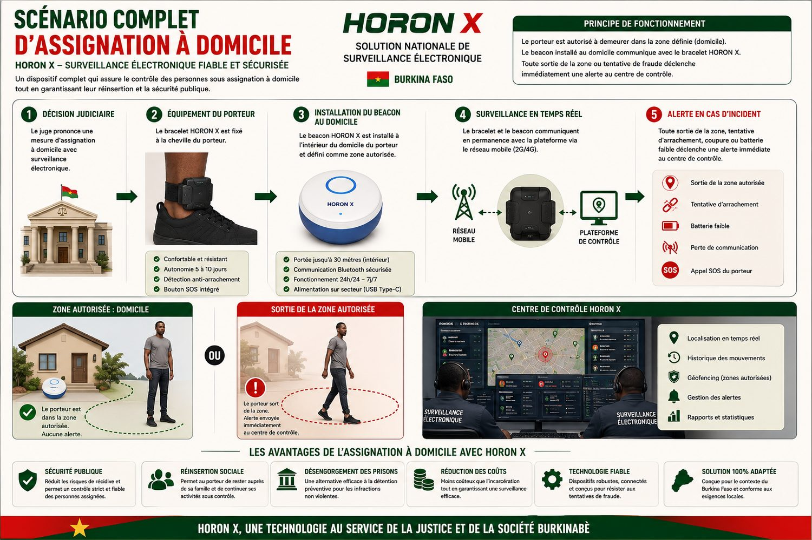
Chaque institution dispose de son propre espace, limité à son rôle. Personne ne voit plus que ce que sa fonction exige ; tout ce que chacun fait est enregistré.
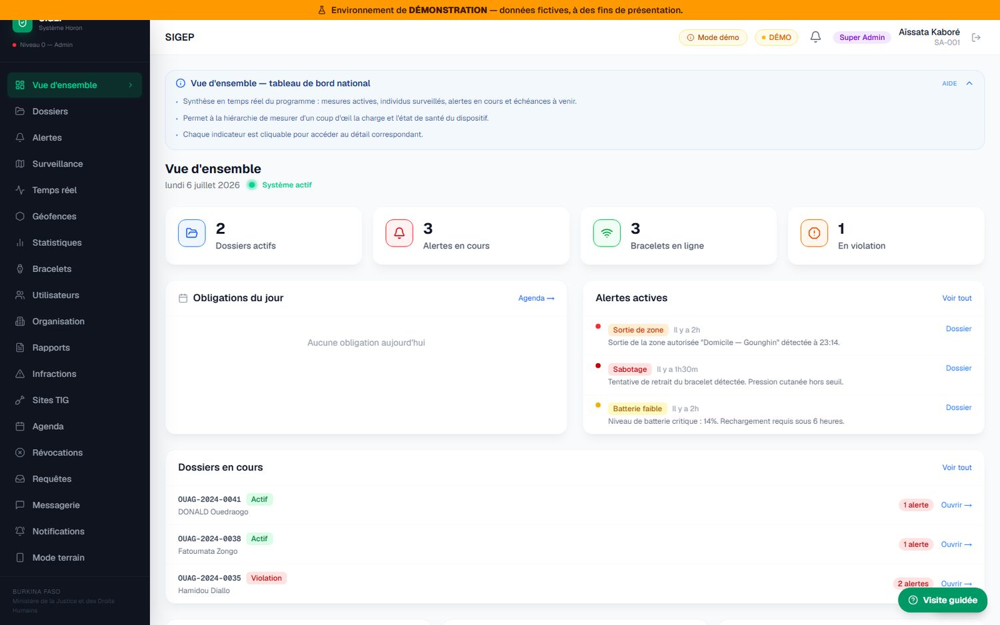
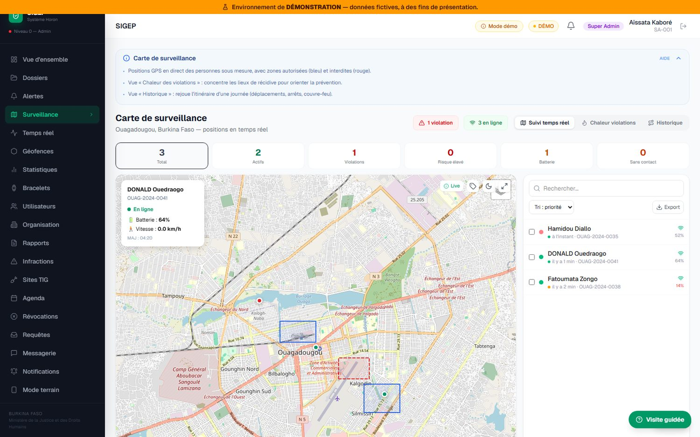
Toute la crédibilité du dispositif tient en une promesse : aucun écart ne passe inaperçu, et aucune alerte ne reste sans suite. Voici comment cette promesse est tenue.
| Événement | Signification pour la Justice |
|---|---|
| Sortie de zone autorisée | Le porteur a quitté le périmètre où il devait rester, ou est entré dans un périmètre interdit |
| Perte du contact domicile | Le bracelet ne détecte plus le Beacon : la personne n'est plus chez elle pendant la plage protégée |
| Violation de couvre-feu | Absence du domicile pendant les heures ordonnées, jour concerné |
| Sabotage détecté | Tentative d'ouverture, de découpe ou de retrait du bracelet — gravité maximale |
| Bouton d'urgence | Le porteur appelle à l'aide ; le centre peut lui parler directement |
| Alerte de santé | Constante critique remontée par le dispositif |
| Batterie faible | Risque d'interruption de suivi : rappel au porteur avant la rupture |
| Perte de signal | Le bracelet ne communique plus : incident technique ou tentative de neutralisation |
Quand un porteur sort de sa zone, une alerte est créée. Tant qu'il reste dehors, le système ne bombarde pas les opérateurs de répétitions inutiles : c'est le même incident. S'il rentre puis ressort, c'est un nouvel incident : nouvelle alerte. Et surtout : la clôture d'une alerte est toujours un acte humain motivé — jamais un effacement automatique.
| État | Ce qu'il signifie |
|---|---|
| Nouvelle | L'alerte vient d'être créée ; sirène et notification sur les postes de garde |
| Prise en compte | Un opérateur identifié l'a prise : tous les autres le voient — pas de double intervention, pas d'alerte orpheline |
| En cours de traitement | Une intervention est engagée sur le terrain |
| Résolue | Clôture motivée par un agent, avec l'une des quatre catégories : écart justifié, fausse alerte, problème technique, intervention effectuée — plus le motif rédigé |
Cette catégorisation n'est pas cosmétique : elle permet de distinguer, dans les statistiques nationales, les vraies violations des incidents techniques, et donc de mesurer honnêtement la fiabilité du dispositif.
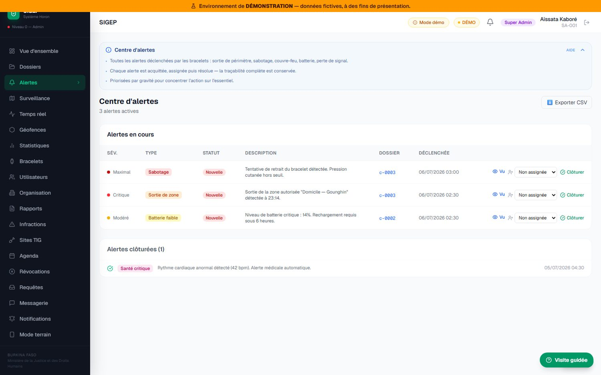
Le système se surveille lui-même : si la collecte des positions s'arrête, les écrans l'affichent en rouge immédiatement et l'équipe nationale est prévenue. Le tableau de bord de chaque utilisateur porte une pastille d'état qui reflète la réalité — jamais un voyant vert de décoration.
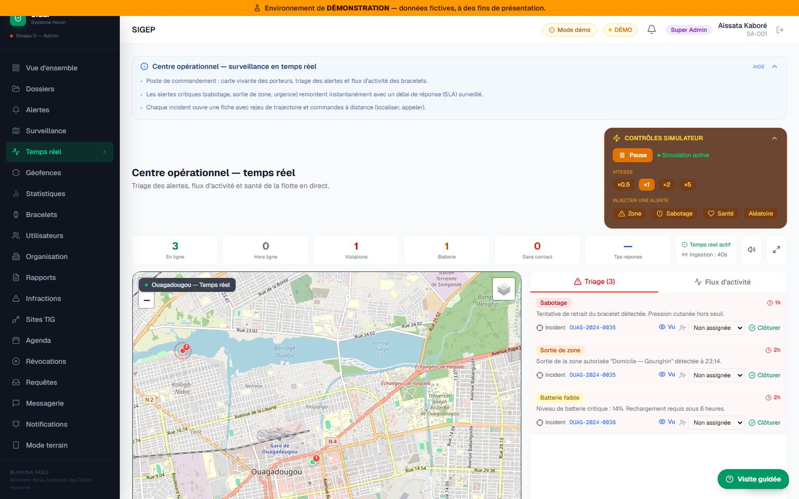
Une mesure alternative ne se réduit pas à une position GPS : elle est faite d'obligations à honorer. SIGEP les planifie et en constate l'exécution.
| Type d'obligation | Exemple |
|---|---|
| Séance de travail d'intérêt général | « Mairie de Baskuy, mardi 08 h–12 h » |
| Contrôle de couvre-feu | « Vérification de présence au domicile, 22 h » |
| Convocation judiciaire | « Audience du 15 du mois, 09 h » |
| Visite de suivi | « Visite sociale hebdomadaire à domicile » |
Chaque obligation reçoit, après coup, l'une de trois issues : honorée, manquée, ou excusée (absence justifiée constatée par le magistrat). Un rappel automatique est envoyé la veille. Chaque absence non justifiée est consignée au dossier et pèse dans l'appréciation finale.
Les agents de suivi et les superviseurs de site consignent des observations qualifiées : positive, neutre, négative ou incident. Un condamné ponctuel, appliqué, bien intégré dans son site d'accueil accumule ainsi un dossier favorable objectif — utile pour un aménagement, une réduction ou une décision de clôture anticipée. La surveillance électronique ne sert pas qu'à sanctionner : elle documente aussi les efforts.
Certaines opérations sensibles ne peuvent pas être décidées seul. Elles passent par une requête motivée, soumise à décision et journalisée : suppression d'un dossier, archivage, réactivation, prolongation de mesure, modification des conditions, ou transfert de juridiction. Chaque requête porte son motif, son demandeur, sa décision et sa note de décision.
Un dispositif national ne vaut que si le matériel est suivi comme un actif de l'État. Chaque bracelet a une identité et une histoire.
| Élément suivi | Détail |
|---|---|
| Identité du matériel | Identifiant unique de l'appareil, modèle, version du logiciel embarqué |
| Carte SIM | Numéro, opérateur (Orange, Moov, Telecel…), date de mise en service, état actif ou suspendu |
| État de santé | Niveau de batterie, qualité du signal, précision GPS, dernier contact, port effectif détecté |
| Cycle de vie | Quatre états : en stock · en service · en maintenance · réformé (avec date et motif de réforme) |
| Maintenance | Tickets typés : batterie, mise à jour logicielle, matériel, calibration, remplacement — avec priorité, agent affecté, date prévue, date de réalisation |
| Communication vocale | Numéros d'urgence configurés et liste blanche des appels autorisés — le porteur ne peut appeler que qui la Justice autorise |
| Événements | Historique complet des événements de l'appareil, consultable par bracelet |
| Rapport | Contenu et usage |
|---|---|
| Rapport de conformité mensuel | Synthèse du respect des conditions judiciaires pour tous les dossiers actifs de la période : taux de présence, infractions, alertes. Usage : pilotage d'un cabinet, revue mensuelle. |
| Rapport d'alertes et de violations | Liste chronologique de toutes les alertes déclenchées : sorties de périmètre, tentatives de sabotage, pertes de signal, avec leur traitement. Usage : production en audience, contradictoire. |
| Rapport de dossier individuel | Historique complet d'un bénéficiaire : positions, alertes, heures de TIG effectuées séance par séance, observations de terrain. Usage : décision de clôture, d'aménagement ou de révocation. |
| Rapport statistique national | Tableau de bord agrégé et anonyme pour le Ministère : mesures prononcées, taux de conformité, occupation des sites TIG, journées de détention évitées. Usage : Conseil des ministres, politique pénale. |
Chaque rapport édité porte une référence unique horodatée, le nom de son émetteur et un bloc de signature. La liste des éditions est elle-même conservée : qui a produit quel rapport, quand. Un rapport ne peut donc être ni contesté dans son origine, ni produit anonymement.
La réussite d'une politique de surveillance électronique dépend aussi de son acceptation sociale. Le site public y pourvoit :
Sans installation ni rendez-vous. Ils fonctionnent sur ordinateur comme sur téléphone : il suffit de scanner le code correspondant avec l'appareil photo du téléphone.
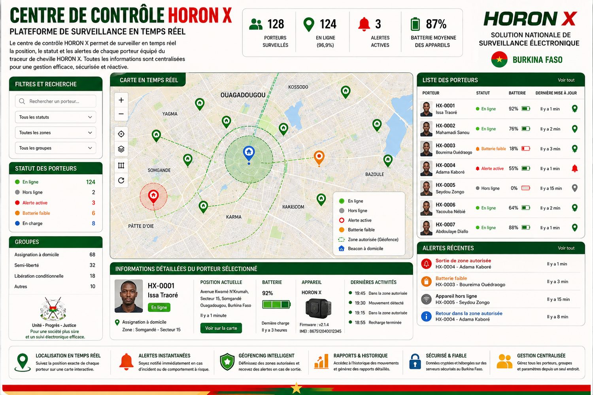
| Garantie | Comment elle est assurée |
|---|---|
| Accès fermé | Aucune inscription libre : chaque compte est créé nominativement par une autorité habilitée. Double authentification. Sessions expirées après inactivité. Comptes à durée de mission (détachements) désactivés automatiquement à échéance, avec motif de désactivation enregistré. |
| Traçabilité totale | Journal d'audit inviolable et en lecture seule : qui s'est connecté, qui a créé quoi, qui a affecté un site TIG, qui a saisi ou supprimé un pointage, qui a résolu quelle alerte, qui a édité quel rapport, avec quel motif. L'auteur reste identifié même si son compte est supprimé plus tard. |
| Cloisonnement | Un juge ne voit que ses dossiers ; un agent, son secteur ou les dossiers qui lui sont assignés ; le Ministère, des chiffres anonymes. Le principe du « besoin d'en connaître » est appliqué écran par écran. |
| Protection des victimes | Zones interdites actives : l'approche du domicile d'une victime déclenche l'alerte avant le contact, pas après le drame. |
| Dignité du porteur | Le bracelet est discret, porté sous le vêtement, étanche et rechargeable sans retrait. Les positions ne sont accessibles qu'aux personnes habilitées, pour la seule finalité judiciaire. Durées de conservation encadrées et purge automatique. |
| Valeur probante | Rapports officiels à référence unique horodatée et bloc signature ; relevés de TIG recalculés depuis la source ; historiques d'infractions exportables ; visites de terrain prouvées par la position GPS de l'agent. |
| Souveraineté des données | Plateforme conçue pour être hébergée à terme sur une infrastructure nationale ; procédure de migration documentée. Le Burkina Faso reste maître de ses données judiciaires. |
| Continuité | Le mode terrain fonctionne sans réseau ; les données saisies se synchronisent automatiquement au retour de la connexion. Rien ne se perd. |
| Pour… | Bénéfices concrets |
|---|---|
| L'État et le contribuable | Désengorgement immédiat des prisons ; économie sur chaque journée de détention évitée ; dispositif qui tend vers l'autofinancement (§17) ; image d'un État moderne et respectueux des standards internationaux. |
| Les juges et le parquet | Une alternative crédible enfin dotée d'un contrôle réel : le juge ordonne, le système vérifie, les preuves s'accumulent d'elles-mêmes. Le TIG devient une peine exécutable et prouvable. Rapports prêts pour l'audience. Moins de détentions provisoires par défaut d'alternative. |
| Le bénéficiaire | Garde son emploi, son toit, sa famille ; purge sa peine sans le traumatisme carcéral ni le contact criminogène ; conserve sa dignité ; ses efforts (TIG accomplis, obligations honorées, journal favorable) sont documentés et jouent en sa faveur ; peut appeler à l'aide en cas de danger. |
| Sa famille | Le revenu du foyer est préservé ; les enfants gardent leur père ou leur mère ; pas de stigmatisation de la visite en prison. |
| Les victimes | Protection active par zones d'exclusion ; alerte immédiate en cas d'approche ; traçabilité utilisable en justice. |
| L'administration pénitentiaire | Moins de surpopulation = détention plus sûre et plus digne pour ceux qui doivent y rester ; les gardes se concentrent sur les profils dangereux ; nouveau métier valorisant de « pose et suivi ». |
| Les communes et structures d'accueil | Une main-d'œuvre encadrée pour l'entretien, la salubrité, les espaces verts, l'appui aux écoles et aux centres de santé — sans charge administrative, la preuve étant portée par le système. |
| La société | Moins de récidive (l'insertion est maintenue) ; des travaux d'intérêt général qui profitent réellement au pays ; une justice visible et mesurable. |
L'idée directrice est simple : celui qui a les moyens de contribuer au coût de sa propre surveillance contribue ; celui qui ne les a pas est pris en charge par l'État — et l'État y gagne quand même, car la surveillance coûte plusieurs fois moins cher que la détention.
Pour être juste et constitutionnellement solide, la contribution est proportionnée au niveau de vie, apprécié par le juge sur pièces (comme pour l'aide juridictionnelle) :
| Profil du porteur | Contribution proposée | Qui paie le reste ? |
|---|---|---|
| Solvable (revenus confortables, patrimoine) | Contribution pleine — ex. 200 000 F — voire majorée pour les placements de confort (détention provisoire évitée sur demande) | — |
| Revenus modestes | Contribution réduite, éventuellement échelonnée (mobile money) | Complément État / fonds SIGEP |
| Indigent | 0 F — prise en charge intégrale par l'État | État (qui économise malgré tout par rapport à la détention) |
Comparons, pour une mesure de 12 mois, la détention et la surveillance électronique. Les montants de détention sont des hypothèses de travail à affiner avec les services compétents du Ministère ; la logique demeure quelle que soit la valeur exacte.
| Détention 12 mois | Bracelet 12 mois (porteur indigent, État payeur) | Bracelet 12 mois (porteur solvable) | |
|---|---|---|---|
| Coût direct pour l'État | Nourriture + garde + santé + entretien : hypothèse 1 500 F/jour ≈ 547 500 F | Amortissement bracelet (réutilisé ~5 fois : 35 000 F) + exploitation ≈ 150 000 F | ≈ 0 F (contribution 200 000 F ≥ coûts) |
| Recette pour le dispositif | 0 | 0 | + 200 000 F |
| Effets induits | Emploi perdu, famille fragilisée, récidive favorisée, surpopulation | Emploi conservé (impôts, consommation), famille stable, heures de TIG au profit des communes, prison désengorgée | |
Hypothèses affichées : parc initial de 500 bracelets ; montée en charge progressive ; durée moyenne de placement 8 mois (soit ~1,5 porteur par bracelet et par an) ; 60 % de porteurs contributifs à contribution moyenne pondérée de 150 000 F (plein tarif, réduits et gratuits confondus) ; équipe SIGEP de 25 agents à coût moyen chargé de 250 000 F/mois.
| Année 1 (pilote) | Année 2 | Année 3 | |
|---|---|---|---|
| Parc de bracelets actifs | 500 | 1 500 | 3 000 |
| Investissement bracelets (175 000 F/u) | − 87,5 M | − 175 M | − 262,5 M |
| Placements dans l'année (~1,5 / bracelet) | 750 | 2 250 | 4 500 |
| Contributions perçues (60 % × 150 000 F) | + 67,5 M | + 202,5 M | + 405 M |
| Masse salariale équipe SIGEP | − 75 M (25 agents) | − 105 M (35 agents) | − 150 M (50 agents) |
| Solde du dispositif | − 95 M (amorçage) | − 77,5 M | ≈ 0 (équilibre atteint) |
| Journées de détention évitées (8 mois × placements) | ~180 000 j | ~540 000 j | ~1 080 000 j |
| Économie brute détention (hyp. 1 500 F/j) | + 270 M | + 810 M | + 1,62 Md |
| Gain net global pour l'État | + 175 M | + 732 M | + 1,6 Md F CFA |
| Risque | Probabilité | Impact | Parade prévue |
|---|---|---|---|
| Panne ou zone blanche du réseau mobile | Élevée | Moyen | Le bracelet mémorise ses positions et les transmet au retour du réseau. Une perte de signal prolongée est elle-même une alerte, traitée comme un incident. Le mode terrain des agents fonctionne hors connexion et se synchronise ensuite. |
| Coupure d'électricité au domicile | Élevée | Faible | Le bracelet a 5 à 10 jours d'autonomie et la base de recharge embarque 6 000 mAh, soit 2 à 3 recharges complètes sans prise. Le Beacon, s'il s'éteint, produit une perte de contact identifiée comme technique, non comme violation. |
| Sabotage du bracelet | Moyenne | Élevé | Double barrière : bande d'acier intégrée contre la coupe, et détection immédiate au niveau de gravité maximal. Même une tentative infructueuse laisse une trace judiciaire et fonde une révocation. |
| Fuite en dehors du territoire | Faible | Élevé | Sélection stricte des profils (§5) ; alerte immédiate à la sortie du périmètre autorisé ; suivi de position en continu ; intervention des forces de sécurité avec la position exacte. |
| Alerte laissée sans traitement | Moyenne | Élevé | Escalade automatique : relance du juge du dossier à 30 minutes, de la direction à 2 heures. Aucune alerte ne peut être fermée sans un motif écrit par un agent identifié. |
| Complaisance sur les heures de TIG | Moyenne | Moyen | Un pointage par dossier et par date, pas d'antidatage, recalcul du total depuis la source, suppression restreinte, journal d'audit, et recoupement avec les positions GPS du porteur et de l'agent. |
| Refus ou défaillance des sites d'accueil | Moyenne | Moyen | Conventionnement en phase 0 ; contrôle de capacité ; possibilité de suspendre un site sans perdre son historique ; taux d'occupation national visible pour anticiper les besoins. |
| Contestation juridique de la mesure | Moyenne | Élevé | Cadre réglementaire adopté avant tout placement ; barème d'équité qui n'influence jamais l'éligibilité ; journal d'audit et rapports signés garantissant le contradictoire ; durées de conservation encadrées. |
| Rupture d'approvisionnement (bracelets, cartes SIM) | Moyenne | Moyen | Parc géré comme un actif : stock, maintenance, réforme et réutilisation tracés. Montée en charge progressive (500 → 1 500 → 3 000) plutôt qu'un déploiement massif d'un seul tenant. |
| Dépendance à un hébergement étranger | Certaine au départ | Moyen | Migration vers une infrastructure nationale inscrite en phase 3, avec procédure documentée. Le Burkina Faso reste juridiquement maître de ses données judiciaires. |
| Rejet par l'opinion publique | Faible | Élevé | Site public pédagogique sans aucune donnée nominative ; communication sur la protection active des victimes ; démonstration ouverte aux médias et aux autorités. |
| Phase | Contenu | Durée indicative |
|---|---|---|
| 0 — Cadre | Adoption du texte réglementaire (décret/arrêté d'application) ; convention avec un agrégateur SMS national ; arrêté de tarification et barème d'équité ; procédure d'agrément des sites TIG et signature des premières conventions avec les mairies, hôpitaux et établissements scolaires. | 1 à 2 mois |
| 1 — Pilote | 2 juridictions pilotes (ex. Ouagadougou, Bobo-Dioulasso) ; 500 bracelets ; constitution du répertoire des sites TIG et formation de leurs responsables au pointage ; formation des juges, greffes, gardes et agents (le manuel complet et les guides par rôle existent déjà) ; cellule SIGEP de garde. | 6 mois |
| 2 — Évaluation | Rapport d'évaluation au Gouvernement : conformité, incidents, heures de TIG réellement accomplies, coûts réels constatés, ajustement du barème. | 1 mois |
| 3 — Extension | Généralisation progressive aux TGI ; extension du répertoire des sites TIG à l'ensemble des communes ; montée du parc à 1 500 puis 3 000 bracelets ; rapatriement de l'hébergement sur infrastructure nationale. | Années 2–3 |
Le rapport d'évaluation prévu en phase 2 ne reposera pas sur des déclarations : tous les indicateurs ci-dessous sont calculés par la plateforme à partir des données réellement enregistrées, et sont exportables sous la signature de leur émetteur.
| N° | Indicateur | Ce qu'il mesure et pourquoi il compte |
|---|---|---|
| 1 | Nombre de mesures prononcées | Adhésion réelle des magistrats au dispositif. Un dispositif que les juges n'utilisent pas ne sert à rien, quelle qu'en soit la qualité technique. |
| 2 | Taux de conformité | Part des dossiers sans violation sur la période. C'est l'indicateur central de crédibilité : il répond à la question « est-ce que ça tient ? ». |
| 3 | Journées de détention évitées | Somme des durées de placement. Base directe du calcul de l'économie budgétaire. |
| 4 | Heures de TIG réellement accomplies | Le chiffre inédit : la valeur de travail restituée à la collectivité, mairie par mairie, école par école. Aujourd'hui, ce chiffre n'existe nulle part. |
| 5 | Taux d'achèvement des TIG | Part des mesures menées jusqu'aux 100 % d'heures ordonnées. Mesure l'efficacité réelle de la peine alternative. |
| 6 | Délai moyen de prise en charge d'une alerte | Temps entre le déclenchement et la prise en compte par un opérateur. Mesure la réactivité de la chaîne humaine, pas seulement de la machine. |
| 7 | Répartition des alertes par cause | Sorties de zone, sabotages, batteries, pertes de signal. Permet de distinguer les vraies violations des incidents techniques — et donc de mesurer honnêtement la fiabilité du matériel. |
| 8 | Taux de révocation | Part des mesures interrompues pour manquement grave. Mesure la qualité de la sélection des profils (§5). |
| 9 | Taux d'occupation des sites TIG | Capacité d'absorption du pays. Indique s'il faut conventionner de nouvelles structures avant d'étendre le dispositif. |
| 10 | Coût réel par porteur et par mois | Confronte les hypothèses du modèle économique aux dépenses constatées, et permet d'ajuster le barème d'équité en connaissance de cause. |
| Pays | Où en est le dispositif | Enseignement pour le Burkina Faso |
|---|---|---|
| France | 16 305 personnes en détention à domicile sous surveillance électronique au 1er février 2025, en hausse de 5,9 % sur un an. La mesure représente 43 % des aménagements de peine en sortie de prison en 2025. | Le dispositif n'est pas marginal : c'est devenu la première modalité d'aménagement de peine d'un grand pays. La montée en charge est progressive et continue, jamais brutale. |
| Sénégal | Lois n° 2020-28 et n° 2020-29 du 27 juillet 2020 instaurant le placement sous surveillance électronique et l'assignation à résidence sous surveillance électronique. Application effective en 2023, après l'ouverture d'un centre de surveillance électronique. Placements passés de 278 en octobre 2023 à 562 en janvier 2025. | Deux leçons majeures. La première : trois ans se sont écoulés entre la loi et son application, faute d'outil opérationnel. La seconde : une fois le dispositif en service, le nombre de placements double en quinze mois. Le Burkina Faso peut éviter le premier écueil, puisque la plateforme existe déjà. |
| Guinée | Contrat d'introduction du bracelet électronique dans le système pénitentiaire signé le 13 août 2025, avec livraison des premiers bracelets et installation d'un centre de contrôle annoncées sous six mois. | La sous-région bouge maintenant. Le Burkina Faso a l'occasion de ne pas être suiveur — et de disposer, avec une solution nationale, d'un actif qu'il pourra ensuite proposer à ses voisins. |
| Maroc | Dispositif annoncé opérationnel à compter d'août 2025 par le ministère de la Justice. | La surveillance électronique s'impose comme le standard des réformes pénitentiaires en Afrique francophone. |
Sources : Ministère de la Justice français, statistique mensuelle des personnes écrouées au 1er février 2025 et étude sur les aménagements de peine 2025 ; Journal officiel de la République du Sénégal n° 7342 du 27 juillet 2020 ; communication officielle du ministère de la Justice du Sénégal, janvier 2025 ; presse guinéenne et marocaine, août 2025. Ces éléments sont fournis à titre de comparaison et peuvent être actualisés à la demande des services du Ministère.
Le Système Horon n'est pas une offre commerciale importée : il est conçu, développé et porté par Bewi's Execution and Tech, entreprise spécialisée dans les systèmes de localisation GPS et le développement de systèmes informatiques. La plateforme présentée dans ce dossier a été construite sur fonds propres, sans financement public, et est aujourd'hui démontrable en conditions réelles.
| Entité / Personne | Qualité | Adresse électronique | Téléphone |
|---|---|---|---|
| Bewi's Execution and Tech | Entreprise porteuse — systèmes GPS et développement informatique | bewisexecution@gmail.com | — |
| BAGUIAN Ezechiel Igor | Ingénieur en développement de systèmes d'automatisation — concepteur de la plateforme | baguian10@gmail.com | +1 929 304 5119 +226 70 79 46 00 |
| OUEDRAOGO Donald | Ingénieur des mines — représentant au Burkina Faso | fasoequipementstore@gmail.com | +226 64 79 24 70 |
Le Système Horon offre au Burkina Faso l'occasion de conjuguer ce que l'on oppose d'ordinaire : la fermeté (une surveillance continue, des preuves inaltérables, une escalade qui ne laisse rien passer) et l'humanité (des familles préservées, des emplois maintenus, une réinsertion réelle) ; la rigueur budgétaire (un dispositif qui s'autofinance et évite des centaines de milliers de journées de détention) et l'innovation souveraine (une solution conçue par des compétences nationales, dont les données resteront sur le sol burkinabè).
Il apporte surtout une chose qui manquait : la preuve. Preuve qu'une personne était bien chez elle. Preuve qu'elle n'a pas approché sa victime. Et preuve, heure par heure, qu'elle a réellement accompli le travail que la société lui a demandé en réparation. Sans cette preuve, les peines alternatives restent des intentions. Avec elle, elles deviennent des peines.
« Horon » signifie l'homme libre. Ce projet propose précisément cela : que la dette envers la société se paie debout, au travail, en famille — sous l'œil vigilant et impartial de la Justice.
Nous nous tenons à la disposition du Gouvernement pour une démonstration en conditions réelles, sur simple convocation. En attendant, la plateforme peut être essayée immédiatement, sans rendez-vous et sans identifiant, à l'adresse sigep-presentation.vercel.app, et une vidéo de présentation est disponible sur tinyurl.com/SigepHoron.
* Les montants marqués comme hypothèses de travail (coût journalier de détention, taux de contributeurs, effectifs) sont des ordres de grandeur volontairement prudents, destinés à illustrer la mécanique économique ; ils seront consolidés avec les services du Ministère lors de la phase 0. Les prix du bracelet (175 000 F CFA) et de la contribution de référence (200 000 F CFA) sont les paramètres proposés par le projet. Les caractéristiques techniques du matériel (figures 1 à 9) sont celles des fiches produit du HORON X. La figure 22 est une illustration de dimensionnement et ne représente pas des données d'exploitation réelles. Les captures d'écran présentées comme « écran réel » (figures 10, 11, 12, 15, 16, 18, 20 et 21) proviennent de la démonstration en ligne accessible à l'adresse indiquée dans ce dossier, alimentée par des données fictives.
| Terme | Définition |
|---|---|
| Bracelet / traceur | Le boîtier porté à la cheville. Il donne la position, détecte les tentatives de retrait et permet d'appeler à l'aide. |
| Beacon | Petit boîtier posé au domicile du porteur et branché sur une prise. Le bracelet dialogue avec lui en Bluetooth : tant qu'il le « voit », la personne est chez elle. |
| Base de recharge | Support sur lequel le porteur pose sa cheville pour recharger le bracelet sans le retirer. Elle contient sa propre batterie de secours. |
| Périmètre (ou géofence) | Zone tracée sur la carte. Autorisée : le porteur doit y rester. Interdite : il ne doit pas y entrer. Un périmètre peut n'être actif qu'à certaines heures. |
| Couvre-feu | Obligation d'être au domicile pendant une plage horaire, certains jours de la semaine choisis par le juge. |
| Alerte | Événement signalé par le système : sortie de zone, sabotage, batterie faible, appel d'urgence… Elle est traitée par un agent identifié et clôturée avec un motif écrit. |
| Escalade | Mécanisme qui fait remonter automatiquement une alerte non traitée : au juge du dossier après 30 minutes, à la direction après 2 heures. |
| Pointage | Enregistrement d'une séance de travail d'intérêt général : date, nombre d'heures, observations du superviseur. Il est signé par l'agent qui le saisit. |
| Site TIG agréé | Structure habilitée à accueillir des personnes en travail d'intérêt général : mairie, hôpital, école, ONG, espace vert. Elle a une capacité d'accueil et un responsable identifié. |
| Heures ordonnées / heures accomplies | Le nombre d'heures fixé par le juge, et le total effectivement réalisé — recalculé automatiquement à partir de tous les pointages enregistrés. |
| Journal d'audit | Registre en lecture seule de tout ce qui est fait dans le système : qui s'est connecté, qui a créé, modifié ou supprimé quoi, avec quel motif et à quelle heure. |
| Révocation | Procédure par laquelle une mesure est interrompue pour manquement grave, et la personne renvoyée en détention. Elle suppose une demande motivée et une décision du juge. |
| Mode terrain | Application utilisée par les agents sur téléphone, qui fonctionne même sans réseau et se synchronise au retour de la connexion. |
| Cloisonnement | Principe selon lequel chaque utilisateur ne voit que ce que sa fonction exige : un juge ses dossiers, un agent son secteur, le Ministère des chiffres anonymes. |
| Barème d'équité | Grille qui module la contribution financière du porteur selon ses ressources — sans jamais influencer la décision judiciaire elle-même. |